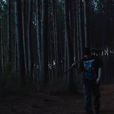

saltarA vida se baseia em matar ou morrer
Lobo ou ovelha? Escolhe o que tu quer ser
Só existe uma maneira pra que não te pisem
O respeito, e não se ganha, ao contrário, se exige!
O mundo é um buraco que te suga e faz mal
E se tu não for forte cai em um lugar infernal
Ao ver o sol nascer tome cuidado, por favor
Quem contar com a sorte não vai ver o sol se por, já era
Isso é guerra, cheiro de medo, não durma cedo
Arme os seus, esse é o pacto
trem desgovernado, então prepara pro impacto
Deus fica do lado de quem atira mais rápido
Não é questão de ser ruim, nem de ser mal
Mas não confiar evita o próprio funeral
eu já provei do amor, sei o gosto da raiva
hoje evito tudo porque não sinto mais nada
tomo cuidado com o que digo, com o que faço
Guardo os segredos, só confio no meu braço
e nesse enredo isso já custou minha paz
mas antes ser julgado do que escutar: Aqu jaz
Foda-se, sai do coma e vi quão cinza é isso aqui
essa é a lama que querem fazer eu engolir
putas na cama mandei embora simplesmente
Vi que uma de fé era o suficiente
o tempo é limitado e as vezes o desperdiçamos
quantas coisas nós perdemos e nem conta damos?
quantos sorrisos pra gente que não suportamos?
Descontando nossos erros em quem nós amamos
é foda ver que isso é um ciclo e não tem fim
meu vô sofreu, meu filho vai depois de mim
e eu me sinto numa jaula preso numa sina escura
com uns pensamentos que mais parecem loucura
Final da guerra sobram corpos nas sarjetas
o dia cai como areia na ampulheta
a noite chega e quem não morreu faz prece
na incerteza se outro dia amanhece
final da guerra sobram corpos nas sarjetas
o dia cai como areia na ampulheta
a noite chega e quem não morreu faz prece
na incerteza se outro dia amanhece
Minha mente não é um bom lugar pra eu estar sozinho
me diz, quanto tempo leva pra encontrar um caminho?
às vezes sinto que tem dois dentro de mim no encalço
um puxando para cima, e outro pra baixo
mas me refaço, eu aprendi essa lição
que ser forte a todo tempo é a única opção
Mesmo morto por dentro resistiria
se vida não é infinita, porque a morte seria?
essa ampulheta personifica um inimigo
e eu sinto saudade do que queria ter sido
então pego o álbum e começo a folear
me vejo na minha infância onde tudo era folia
Época boa, período curto
onde eu achava que era foda ser adulto
mas se eu pudesse voltaria pro passado
e me avisaria que eu tava bem errado
e que todos os que eu conheci não eram os mesmos
a inocência foi extinta por dinheiro
alguns morreram, outros foram embora
E amigo muda tanto que não era amigo agora
mano, sei que o tempo não tem dono
e se você achou respostas então me explica como
tô de outono em outono
com medos matando meus sonhos
planos tirando meu sono
Final da guerra sobram corpos nas sarjetas
o dia cai como areia na ampulheta
a noite chega e quem não morreu faz prece
na incerteza se outro dia amanhece
final da guerra sobram corpos nas sarjetas
o dia cai como areia na ampulheta
A noite chega e quem não morreu faz prece
na incerteza se outro dia amanhece
final da guerra sobram corpos nas sarjetas
o dia cai como areia na ampulheta
a noite chega e quem não morreu faz prece
na incerteza se outro dia amanhece